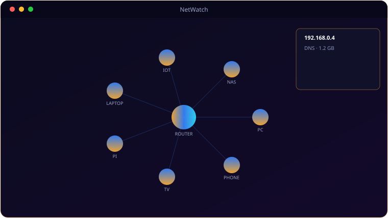

A look inside NetWatch.

Everything NetWatch brings to the table.
ARP Discovery
Sweeps the LAN every 30 seconds to find all devices, colour-coded by type — router, Apple, Android, PC, Pi or unknown.
Draggable Device Map
A dark, dot-grid canvas where every device is a node you can drag into the layout that makes sense to you.
Passive DNS Sniffing
Watches UDP port 53 to log which domains each device is querying — see what's really talking to the internet.
Bandwidth Tracking
Bytes sent and received per device since launch, so heavy talkers stand out.
On-Demand Port Scan
Scan 18 common ports on any device in a background thread, without stalling the UI.
Device Detail Panel
Click a node for IP, MAC, hostname, manufacturer, DNS log and bandwidth totals.
System requirements.
Minimum
- OS: Windows 10 (64-bit) or Windows 11
- CPU: Dual-core, 2.0 GHz
- Memory: 4 GB RAM
- Graphics: Any DirectX 11 / integrated GPU
- Storage: 250 MB + space for your files
- Display: 1280×768 or higher
- Drivers: Npcap (free) installed
- Privileges: must run as Administrator
Recommended
- OS: Windows 11 (64-bit)
- CPU: Quad-core, 3.0 GHz
- Memory: 8 GB RAM
- Graphics: Dedicated GPU (optional)
- Storage: SSD with a few GB free
- Display: 1920×1080 or higher
NetWatch needs Npcap for DNS sniffing and bandwidth capture, and must run as Administrator for raw sockets.
The details.
| Discovery | ARP sweep every 30s, manufacturer via OUI |
| Sniffing | DNS (UDP 53) + bandwidth via Scapy |
| Port scan | 18 common ports, background thread |
| Requires | Npcap + run as Administrator |
| Platform | Windows 10 / 11 |
Get NetWatch.
Map your LAN, watch DNS and bandwidth, scan ports.
⬇ Download NetWatchNetWatch_Setup.exe · free · Windows 10/11 · Npcap + admin